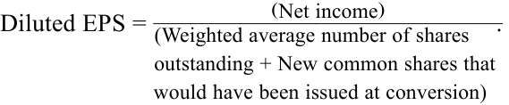

Learning Module 2 Analyzing Income Statements - Part 3: Non-Recurring Items
Volume 4: Financial Statement Analysis
Learning Module 2 Analyzing Income Statements
Part 3/4: Non-Recurring Items (PDF Pages 75–89)
Tập 4: Phân tích Báo cáo Tài chính (Financial Statement Analysis)
Học phần 2: Phân tích Báo cáo Kết quả Hoạt động Kinh doanh (Analyzing Income Statements)
Phần 3/4: Các Khoản mục Không thường xuyên và Thu nhập trên mỗi Cổ phần – EPS (Trang PDF 75–89)
NON-RECURRING ITEMS
CÁC KHOẢN MỤC KHÔNG THƯỜNG XUYÊN (NON-RECURRING ITEMS)
4
4
describe the financial reporting treatment and analysis of non-recurring items (including discontinued operations, unusual or infrequent items) and changes in accounting policies
mô tả phương pháp hạch toán báo cáo tài chính và phân tích các khoản mục không thường xuyên (non-recurring items - bao gồm hoạt động bị chấm dứt [discontinued operations], các khoản mục bất thường hoặc không thường xuyên [unusual or infrequent items]) và những thay đổi trong chính sách kế toán (changes in accounting policies)
From a company’s income statements, we can see its earnings from the year just ended and the previous year. Looking forward, the question is: What will the company earn next year and in the years thereafter?
Từ báo cáo kết quả hoạt động kinh doanh của một công ty, chúng ta có thể thấy lợi nhuận của công ty đó trong năm vừa kết thúc và năm trước đó. Nhìn về phía trước, câu hỏi đặt ra là: Công ty sẽ kiếm được bao nhiêu vào năm tới và trong những năm tiếp theo sau đó?
To assess a company’s future earnings, it is helpful to separate those prior years’ items of income and expense that are likely to continue in the future from those items that are less likely to continue. Some items from prior years are clearly not expected to continue in the future periods and are separately disclosed on a company’s income statement. IFRS describe considerations that enter into the decision to present information other than that explicitly specified by a standard. Both IFRS and US GAAP specify that the results of discontinued operations should be reported separately from continuing operations. Other items that may be reported separately on a company’s income statement, such as unusual items, items that occur infrequently, effects due to accounting changes, and non-operating income, require the analyst to make some judgments.
Để đánh giá lợi nhuận tương lai của một công ty, việc tách biệt những khoản mục thu nhập và chi phí của các năm trước có khả năng sẽ tiếp diễn trong tương lai (recurring) ra khỏi những khoản mục ít có khả năng tiếp diễn (non-recurring) là rất hữu ích. Một số khoản mục từ những năm trước rõ ràng không được kỳ vọng sẽ tiếp diễn trong các kỳ tương lai và được thuyết minh tách biệt trên báo cáo kết quả hoạt động kinh doanh của công ty. Chuẩn mực IFRS mô tả những cân nhắc được đưa vào quyết định trình bày thông tin ngoài những gì được quy định rõ ràng bởi một chuẩn mực. Cả IFRS và US GAAP đều quy định cụ thể rằng kết quả của các hoạt động bị chấm dứt (discontinued operations) phải được báo cáo tách biệt khỏi các hoạt động kinh doanh liên tục (continuing operations). Các khoản mục khác có thể được báo cáo tách biệt trên báo cáo kết quả hoạt động kinh doanh của một công ty, chẳng hạn như các khoản mục bất thường (unusual items), các khoản mục xảy ra không thường xuyên (items that occur infrequently), tác động do những thay đổi kế toán (accounting changes), và thu nhập ngoài hoạt động kinh doanh (non-operating income), đòi hỏi nhà phân tích phải đưa ra một số xét đoán chuyên môn.
Unusual or Infrequent Items
Các Khoản mục Bất thường hoặc Không thường xuyên (Unusual or Infrequent Items)
IFRS require that items of income or expense that are material or relevant to the understanding of the entity’s financial performance should be disclosed separately. Unusual or infrequent items are likely to meet these criteria. Under US GAAP, material items that are unusual or infrequent, and that are both as of reporting periods beginning after December 15, 2015, are shown as part of a company’s continuing operations but are presented separately. For example, restructuring charges, such as costs to close plants and employee termination costs, are considered part of a company’s ordinary activities. As another example, gains and losses arising when a company sells an asset or part of a business, for more or less than its carrying value, are also disclosed separately on the income statement. These sales are considered ordinary business activities.
IFRS yêu cầu rằng các khoản mục thu nhập hoặc chi phí mang tính trọng yếu (material) hoặc thích hợp cho việc hiểu rõ kết quả hoạt động tài chính của đơn vị phải được thuyết minh tách biệt. Các khoản mục bất thường hoặc không thường xuyên nhiều khả năng sẽ đáp ứng các tiêu chí này. Theo US GAAP, các khoản mục trọng yếu có tính chất bất thường (unusual) hoặc không thường xuyên (infrequent), hoặc có cả hai tính chất này (kể từ các kỳ báo cáo bắt đầu sau ngày 15 tháng 12 năm 2015, US GAAP đã xóa bỏ khái niệm "khoản mục đặc biệt – extraordinary items"), đều được trình bày như một phần trong hoạt động kinh doanh liên tục (continuing operations) của công ty nhưng được trình bày thành dòng riêng biệt. Ví dụ, chi phí tái cấu trúc (restructuring charges), chẳng hạn như chi phí đóng cửa nhà máy và chi phí chấm dứt hợp đồng lao động với nhân viên, được coi là một phần trong các hoạt động thông thường của công ty. Lấy một ví dụ khác, các khoản lãi và lỗ phát sinh khi một công ty bán một tài sản hoặc một phần mảng kinh doanh với giá cao hơn hoặc thấp hơn giá trị ghi sổ của nó cũng được thuyết minh tách biệt trên báo cáo kết quả hoạt động kinh doanh. Các giao dịch bán tài sản này vẫn được coi là thuộc hoạt động kinh doanh thông thường.
Highlighting the unusual or infrequent nature of these items assists an analyst in judging the likelihood that such items will reoccur. This meets the IFRS criteria of disclosing items that are relevant to the understanding of an entity’s financial performance. In Exhibit 8, the income statement of Danone shows an amount for “Recurring operating income” followed by a separate line item for “other operating income (expense),” which is not included as a component of recurring income. Exhibit 9 presents an excerpt from Danone’s additional disclosure about this non-recurring amount.
Việc làm nổi bật bản chất bất thường hoặc không thường xuyên của các khoản mục này hỗ trợ nhà phân tích trong việc phán đoán khả năng các khoản mục như vậy sẽ tái diễn trong tương lai. Điều này đáp ứng tiêu chí của IFRS về việc thuyết minh các khoản mục có liên quan đến việc hiểu rõ kết quả hoạt động tài chính của một đơn vị. Trong Bảng 8 (Exhibit 8), báo cáo kết quả hoạt động kinh doanh của Danone hiển thị một con số cho “Thu nhập hoạt động thường xuyên (Recurring operating income)” theo sau là một khoản mục dòng riêng biệt cho “Thu nhập (chi phí) hoạt động khác (other operating income [expense])”, khoản mục không được tính vào làm một cấu phần của thu nhập thường xuyên. Bảng 9 (Exhibit 9) trình bày một trích đoạn từ thuyết minh bổ sung của Danone về khoản tiền không thường xuyên này.
Exhibit 8: Danone Income Statement
Bảng 8: Báo cáo Kết quả Hoạt động Kinh doanh của Danone (Exhibit 8: Danone Income Statement)
Groupe Danone Consolidated Income Statement (in Millions of Euros) [Excerpt]
Báo cáo Kết quả Hoạt động Kinh doanh Hợp nhất của Groupe Danone (Tính bằng Triệu Euro) [Trích đoạn]
| Year Ended | 31 December | |
|---|---|---|
| 2016 | 2017 | |
| Sales | 21,944 | 24,677 |
| Cost of goods sold | (10,744) | (12,459) |
| Khoản mục | Năm Kết thúc Ngày 31 tháng 12 | |
|---|---|---|
| 2016 | 2017 | |
| Doanh thu (Sales) | $21.944$ | $24.677$ |
| Giá vốn hàng bán (Cost of goods sold) | $(10.744)$ | $(12.459)$ |
| Groupe Danone Consolidated Income Statement (i | n Millions of Euro | s) [Excerpt] |
|---|---|---|
| Year Ended 3 | 1 December | |
| 2016 | 2017 | |
| Selling expense | (5,562) | (5,890) |
| General and administrative expense | (2,004) | (2,225) |
| Research and development expense | (333) | (342) |
| Other income (expense) | (278) | (219) |
| Recurring operating income | 3,022 | 3,543 |
| Other operating income (expense) | (99) | 192 |
| Operating income | 2,923 | 3,734 |
| Interest income on cash equivalents and | 130 | 151 |
| short-term investments | ||
| Interest expense | (276) | (414) |
| Cost of net debt | (146) | (263) |
| Other financial income | 67 | 137 |
| i Other financial expense |
(214) | (312) |
| i Income before tax |
2,630 | 3,296 |
| Income tax expense | (804) | (842) |
| Net income from fully consolidated companies | 1,826 | 2,454 |
| Share of profit of associates | 1 | 109 |
| Net income | 1,827 | 2,563 |
| Net income – Group share | 1,720 | 2,453 |
| Net income – Non-controlling interests | 107 | 110 |
| Báo cáo Kết quả Hoạt động Kinh doanh Hợp nhất của Groupe Danone (Tính bằng Triệu Euro) [Trích đoạn] (tiếp theo) | ||
|---|---|---|
| Khoản mục | Năm Kết thúc Ngày 31 tháng 12 | |
| 2016 | 2017 | |
| Chi phí bán hàng (Selling expense) | $(5.562)$ | $(5.890)$ |
| Chi phí chung và quản lý doanh nghiệp (General and administrative expense) | $(2.004)$ | $(2.225)$ |
| Chi phí nghiên cứu và phát triển (Research and development expense) | $(333)$ | $(342)$ |
| Thu nhập (chi phí) khác (Other income/expense) | $(278)$ | $(219)$ |
| Thu nhập hoạt động thường xuyên (Recurring operating income) | $3.022$ | $3.543$ |
| Thu nhập (chi phí) hoạt động khác (Other operating income/expense) | $(99)$ | $192$ |
| Thu nhập hoạt động (Operating income) | $2.923$ | $3.734$ |
| Thu nhập lãi trên các khoản tương đương tiền và đầu tư ngắn hạn (Interest income on cash equivalents and short-term investments) | $130$ | $151$ |
| Chi phí lãi vay (Interest expense) | $(276)$ | $(414)$ |
| Chi phí nợ ròng (Cost of net debt) | $(146)$ | $(263)$ |
| Thu nhập tài chính khác (Other financial income) | $67$ | $137$ |
| Chi phí tài chính khác (Other financial expense) | $(214)$ | $(312)$ |
| Thu nhập trước thuế (Income before tax) | $2.630$ | $3.296$ |
| Chi phí thuế thu nhập (Income tax expense) | $(804)$ | $(842)$ |
| Lợi nhuận ròng từ các công ty hợp nhất toàn bộ (Net income from fully consolidated companies) | $1.826$ | $2.454$ |
| Phần chia lợi nhuận từ các công ty liên kết (Share of profit of associates) | $1$ | $109$ |
| Lợi nhuận ròng (Net income) | $1.827$ | $2.563$ |
| Lợi nhuận ròng – Phần thuộc về Tập đoàn (Net income – Group share) | $1.720$ | $2.453$ |
| Lợi nhuận ròng – Lợi ích cổ đông không kiểm soát (Net income – Non-controlling interests) | $107$ | $110$ |
Exhibit 9: Highlighting Infrequent Nature of Items—Excerpt from Groupe Danone footnotes to its 2017 financial statements
Bảng 9: Làm nổi bật Bản chất Không thường xuyên của các Khoản mục — Trích đoạn từ thuyết minh báo cáo tài chính năm 2017 của Groupe Danone
NOTE 6. Events and Transactions Outside the Group’s Ordinary Activities [Excerpt]
THUYẾT MINH SỐ 6. Các Sự kiện và Giao dịch Nằm ngoài Hoạt động Thông thường của Tập đoàn [Trích đoạn]
Other operating income (expense) is defined under Recommendation 201303 of the French CNC relating to the format of consolidated financial statements prepared under international accounting standards, and comprises significant items that, because of their exceptional nature, cannot be viewed as inherent to Danone’s current activities. These mainly include capital gains and losses on disposals of fully consolidated companies, impairment charges on goodwill, significant costs related to strategic restructuring and major external growth transactions, and incurred or estimated costs related to major crises and major litigation. Furthermore, in connection with Revised IFRS 3 and Revised IAS 27, Danone also classifies in Other operating income (expense) (i) acquisition costs related to business combinations, (ii) revaluation profit or loss accounted for following a loss of control, and (iii) changes in earn-outs related to business combinations and subsequent to the acquisition date.
Thu nhập (chi phí) hoạt động khác (Other operating income [expense]) được định nghĩa theo Khuyến nghị số 2013-03 của Ủy ban Kế toán Quốc gia Pháp (CNC) liên quan đến định dạng của báo cáo tài chính hợp nhất được lập theo các chuẩn mực kế toán quốc tế, và bao gồm các khoản mục trọng yếu mà, do bản chất ngoại lệ (exceptional nature) của chúng, không thể được xem là vốn có đối với các hoạt động hiện hành của Danone. Các khoản này chủ yếu bao gồm lãi và lỗ vốn từ việc thanh lý các công ty được hợp nhất toàn bộ, chi phí suy giảm giá trị lợi thế thương mại (impairment charges on goodwill), các chi phí trọng yếu liên quan đến tái cấu trúc chiến lược và các giao dịch tăng trưởng bên ngoài (M&A) lớn, cùng các chi phí phát sinh hoặc ước tính liên quan đến các cuộc khủng hoảng lớn và các vụ kiện tụng lớn. Hơn nữa, liên quan đến chuẩn mực IFRS 3 Sửa đổi và IAS 27 Sửa đổi, Danone cũng phân loại vào mục Thu nhập (chi phí) hoạt động khác: (i) chi phí mua lại (acquisition costs) liên quan đến các giao dịch hợp nhất kinh doanh, (ii) lãi hoặc lỗ đánh giá lại được hạch toán sau khi mất quyền kiểm soát, và (iii) những thay đổi trong các khoản thanh toán trả thêm theo kết quả hoạt động (earn-outs) liên quan đến hợp nhất kinh doanh phát sinh sau ngày mua.
In 2017, the net Other operating income of €192 million consisted mainly of the following items:
Trong năm 2017, khoản Thu nhập hoạt động khác ròng trị giá $192\text{ triệu EUR}$ chủ yếu bao gồm các khoản mục sau đây:
| (Euro Millions) | Related Income (Expense) |
|---|---|
| Capital gain on disposal of Stonyfield | 628 |
| Compensation received following the decision of the | 105 |
| Singapore arbitration court in the Fonterra case | |
| Territorial risks, mainly in certain countries in the ALMA region |
(148) |
| Costs associated with the integration of WhiteWave | (118) |
| Impairment of several intangible assets in Waters and | (115) |
| Specialized Nutrition Reportingentities |
| (Triệu Euro) | Thu nhập (Chi phí) Liên quan |
|---|---|
| Lãi vốn từ việc thanh lý công ty Stonyfield (Capital gain on disposal of Stonyfield) | $628$ |
| Tiền bồi thường nhận được sau phán quyết của tòa trọng tài Singapore trong vụ kiện Fonterra | $105$ |
| Rủi ro lãnh thổ, chủ yếu tại một số quốc gia trong khu vực ALMA | $(148)$ |
| Các chi phí liên quan đến quá trình tích hợp công ty WhiteWave | $(118)$ |
| Suy giảm giá trị của một số tài sản vô hình tại các đơn vị báo cáo mảng Nước uống và Dinh dưỡng Chuyên biệt | $(115)$ |
Remainder of table omitted
Phần còn lại của bảng đã được lược bớt
In Exhibit 9, Danone provides details on items considered to be “exceptional” items and not “inherent” to the company’s current activities. The exceptional items include gains on asset disposals, receipts from a legal case, costs of integrating an acquisition, and impairment of intangible assets, among others. Generally, in forecasting future operations, an analyst would assess whether the items reported are likely to reoccur and also possible implications for future earnings. It is generally not advisable simply to ignore all unusual items.
Trong Bảng 9, Danone cung cấp thông tin chi tiết về các khoản mục được coi là các khoản mục “ngoại lệ (exceptional)” và không “vốn có (inherent)” đối với hoạt động hiện tại của công ty. Các khoản mục ngoại lệ này bao gồm lãi từ thanh lý tài sản, tiền thu được từ một vụ kiện pháp lý, chi phí tích hợp một thương vụ mua lại, và suy giảm giá trị tài sản vô hình, cùng các khoản mục khác. Nhìn chung, khi dự báo kết quả hoạt động trong tương lai, nhà phân tích sẽ đánh giá xem liệu các khoản mục được báo cáo đó có khả năng tái diễn hay không cũng như những hàm ý có thể có đối với lợi nhuận tương lai. Nhìn chung, lời khuyên là không nên đơn thuần nhắm mắt bỏ qua tất cả các khoản mục bất thường.
Discontinued Operations
Các Hoạt động Bị chấm dứt (Discontinued Operations)
When a company disposes of or establishes a plan to dispose of one of its component operations and will have no further involvement in the operation, the income statement reports separately the effect of this disposal as a “discontinued” operation under both IFRS and US GAAP. Financial standards provide various criteria for reporting the effect separately, which are generally that the discontinued component must be separable both physically and operationally.
Khi một công ty thanh lý hoặc thiết lập một kế hoạch chắc chắn để thanh lý một trong các bộ phận hoạt động cấu phần của mình và sẽ không còn bất kỳ sự tham gia nào nữa vào hoạt động đó sau khi thanh lý, báo cáo kết quả hoạt động kinh doanh sẽ báo cáo tách biệt tác động của việc thanh lý này như một hoạt động “bị chấm dứt” (“discontinued” operation) theo cả IFRS và US GAAP. Các chuẩn mực tài chính đưa ra nhiều tiêu chí khác nhau để báo cáo tách biệt tác động này, mà nhìn chung là bộ phận bị chấm dứt đó phải có thể tách rời được cả về mặt vật lý/tài sản lẫn về mặt vận hành (separable both physically and operationally).
Results of discontinued operations are presented on a net basis at the bottom of the income statement, including on a per share basis. The remaining parts of income statement (e.g., revenue, costs of goods sold, EPS from the remaining businesses) are the results of continuing operations and are disclosed as such. Assets and liabilities related to the discontinued operations are aggregated and recognized on the balance sheet as held for sale. This presentation allows an analyst to clearly evaluate continuing versus discontinued operations.
Kết quả của các hoạt động bị chấm dứt được trình bày trên cơ sở đã trừ thuế (net basis / net of tax) ở phần cuối của báo cáo kết quả hoạt động kinh doanh, bao gồm cả số liệu tính trên mỗi cổ phần. Các phần còn lại của báo cáo kết quả hoạt động kinh doanh (ví dụ: doanh thu, giá vốn hàng bán, EPS từ các mảng kinh doanh còn lại) là kết quả của các hoạt động kinh doanh liên tục (continuing operations) và được thuyết minh rõ như vậy. Tài sản và nợ phải trả liên quan đến các hoạt động bị chấm dứt được gộp lại và ghi nhận trên bảng cân đối kế toán là nắm giữ để bán (held for sale). Cách trình bày này cho phép nhà phân tích đánh giá rõ ràng các hoạt động kinh doanh liên tục đối chiếu với các hoạt động bị chấm dứt.
Because the discontinued operation will no longer provide earnings (or cash flow) to the company once the sale or disposal is complete, an analyst may eliminate discontinued operations in formulating expectations about a company’s future financial performance after a certain date.
Bởi vì hoạt động bị chấm dứt sẽ không còn mang lại lợi nhuận (hoặc dòng tiền) cho công ty một khi việc bán hoặc thanh lý hoàn tất, nhà phân tích có thể loại bỏ hoàn toàn các hoạt động bị chấm dứt khi xây dựng các kỳ vọng về kết quả hoạt động tài chính trong tương lai của công ty sau một ngày nhất định.
Changes in Accounting Policy
Những Thay đổi trong Chính sách Kế toán (Changes in Accounting Policy)
At times, standard setters issue new standards that require companies to change accounting policies. Depending on the standard, companies may be permitted to adopt the standards prospectively (in the future) or retrospectively (restate financial statements as though the standard existed in the past). In other cases, changes in accounting policies (e.g., from one acceptable inventory costing method to another)
Đôi khi, các cơ quan thiết lập chuẩn mực ban hành các chuẩn mực mới yêu cầu các công ty phải thay đổi chính sách kế toán. Tùy thuộc vào quy định chuyển tiếp của chuẩn mực đó, các công ty có thể được phép áp dụng các chuẩn mực mới theo hướng phi hồi tố (prospectively — áp dụng trong tương lai) hoặc hồi tố (retrospectively — điều chỉnh hồi tố lại các báo cáo tài chính quá khứ như thể chuẩn mực mới đã tồn tại từ trước). Trong các trường hợp khác, những thay đổi trong chính sách kế toán (ví dụ: chuyển từ một phương pháp tính giá hàng tồn kho được chấp nhận này sang một phương pháp được chấp nhận khác)
are made by management for various reasons, such as providing a better reflection of the company’s performance. Changes in accounting policies are reported through retrospective application1 unless it is impractical to do so.
được ban điều hành tự nguyện thực hiện vì nhiều lý do khác nhau, chẳng hạn như nhằm cung cấp sự phản ánh tốt hơn về kết quả hoạt động của công ty. Những thay đổi trong chính sách kế toán được báo cáo thông qua áp dụng hồi tố (retrospective application)1 trừ khi việc thực hiện điều đó là bất khả thi trên thực tế (impractical).
Retrospective application means that the financial statements for all fiscal years shown in a company’s financial report are presented as if the newly adopted accounting principle had been used throughout the entire period. Notes to the financial statements describe the change and explain the justification for the change. Because changes in accounting principles are retrospectively applied, the financial statements that appear within a financial report are comparable.
Áp dụng hồi tố (Retrospective application) có nghĩa là các báo cáo tài chính cho tất cả các năm tài chính được hiển thị trong báo cáo tài chính của một công ty đều được trình bày lại (restated) như thể nguyên tắc kế toán mới được thông qua đã được sử dụng xuyên suốt toàn bộ các kỳ đó. Phần thuyết minh báo cáo tài chính sẽ mô tả sự thay đổi và giải thích lý do chính đáng cho sự thay đổi đó. Bởi vì những thay đổi trong nguyên tắc kế toán được áp dụng hồi tố, các báo cáo tài chính xuất hiện bên trong cùng một báo cáo tài chính có thể so sánh tương đương với nhau qua các năm.
Example 7 presents an excerpt from Microsoft Corporation’s Form 10-K for the fiscal year ended 30 June 2018 describing a change in accounting principle resulting from the new revenue recognition standard. Microsoft elected to adopt the new standard 1 July 2017, earlier than the required adoption date. Microsoft also elected to use the “full retrospective method,” which requires companies to restate prior periods’ results. On its income statement, both 2016 and 2017 are presented as if the new standard had been used throughout both years. In the footnotes to its financial statements, Microsoft discloses the impact of the new standard.
Ví dụ 7 trình bày một trích đoạn từ Biểu mẫu 10-K của Tập đoàn Microsoft cho năm tài chính kết thúc vào ngày 30 tháng 6 năm 2018 mô tả một sự thay đổi trong nguyên tắc kế toán bắt nguồn từ chuẩn mực ghi nhận doanh thu mới. Microsoft đã chọn áp dụng chuẩn mực mới từ ngày 1 tháng 7 năm 2017, sớm hơn so với ngày bắt buộc áp dụng. Microsoft cũng đã chọn sử dụng “phương pháp hồi tố toàn phần (full retrospective method)”, phương pháp yêu cầu các công ty phải điều chỉnh lại (restate) kết quả của các kỳ trước. Trên báo cáo kết quả hoạt động kinh doanh của công ty, cả hai năm 2016 và 2017 đều được trình bày như thể chuẩn mực mới đã được sử dụng xuyên suốt trong cả hai năm. Trong phần thuyết minh báo cáo tài chính của mình, Microsoft công bố tác động của chuẩn mực mới.
EXAMPLE 7
VÍ DỤ 7 (EXAMPLE 7)
Microsoft Corporation—Excerpt from Footnotes to the Financial Statements
Tập đoàn Microsoft — Trích đoạn từ Thuyết minh Báo cáo Tài chính (Microsoft Corporation—Excerpt from Footnotes to the Financial Statements)
The most significant impact of the [new revenue recognition] standard relates to our accounting for software license revenue. Specifically, for Windows 10, we recognize revenue predominantly at the time of billing and delivery rather than ratably over the life of the related device. For certain multi-year commercial software subscriptions that include both distinct software licenses and SA, we recognize license revenue at the time of contract execution rather than over the subscription period. Due to the complexity of certain of our commercial license subscription contracts, the actual revenue recognition treatment required under the standard depends on contract-specific terms and in some instances may vary from recognition at the time of billing. Revenue recognition related to our hardware, cloud offerings (such as Office 365), LinkedIn, and professional services remains substantially unchanged. Refer to Impacts to Previously Reported Results below for the impact of adoption of the standard in our consolidated financial statements.
Tác động đáng kể nhất của chuẩn mực [ghi nhận doanh thu mới] liên quan đến việc hạch toán doanh thu cấp phép bản quyền phần mềm của chúng tôi. Cụ thể, đối với hệ điều hành Windows 10, chúng tôi ghi nhận doanh thu chủ yếu tại thời điểm lập hóa đơn và giao hàng thay vì phân bổ theo tỷ lệ thời gian trong suốt vòng đời của thiết bị có liên quan. Đối với một số gói đăng ký phần mềm thương mại nhiều năm bao gồm cả giấy phép phần mềm tách biệt và dịch vụ Đảm bảo Phần mềm (SA), chúng tôi ghi nhận doanh thu giấy phép ngay tại thời điểm thực thi hợp đồng thay vì trải dài trong suốt thời gian đăng ký thuê bao. Do tính phức tạp của một số hợp đồng đăng ký giấy phép thương mại của chúng tôi, phương pháp ghi nhận doanh thu thực tế theo yêu cầu của chuẩn mực phụ thuộc vào các điều khoản cụ thể của từng hợp đồng và trong một số trường hợp có thể khác với việc ghi nhận tại thời điểm lập hóa đơn. Việc ghi nhận doanh thu liên quan đến phần cứng, các dịch vụ đám mây (chẳng hạn như Office 365), LinkedIn và các dịch vụ chuyên nghiệp của chúng tôi về cơ bản vẫn không thay đổi. Hãy tham khảo mục Tác động đối với Kết quả Đã Báo cáo Trước đây dưới đây để biết tác động của việc áp dụng chuẩn mực lên báo cáo tài chính hợp nhất của chúng tôi.
Exhibit 10: Microsoft Impacts to Previously Reported Results
Bảng 10: Tác động đối với Kết quả Đã Báo cáo Trước đây của Microsoft (Exhibit 10: Microsoft Impacts to Previously Reported Results)
| (US dollar millions, except per share amounts) |
As Pre- viously Reported |
New Revenue Standard Adjustment |
As Restated |
|---|---|---|---|
| Income Statements | |||
| Year Ended 30 June 2017 | |||
| Revenue | 89,950 | 6,621 | 96,571 |
| Provision for income taxes | 1,945 | 2,467 | 4,412 |
| Net income | 21,204 | 4,285 | 25,489 |
| Diluted earnings per share | 2.71 | 0.54 | 3.25 |
| (Triệu đô la Mỹ, ngoại trừ các số liệu trên mỗi cổ phần) | Theo Báo cáo Trước đây (As Previously Reported) | Điều chỉnh theo Chuẩn mực Doanh thu Mới (New Revenue Standard Adjustment) | Sau khi Điều chỉnh Hồi tố (As Restated) |
|---|---|---|---|
| Báo cáo Kết quả Hoạt động Kinh doanh (Income Statements) | |||
| Năm Kết thúc Ngày 30 tháng 6 năm 2017 | |||
| Doanh thu (Revenue) | $89.950$ | $6.621$ | $96.571$ |
| Dự phòng thuế thu nhập (Provision for income taxes) | $1.945$ | $2.467$ | $4.412$ |
| Lợi nhuận ròng (Net income) | $21.204$ | $4.285$ | $25.489$ |
| Thu nhập trên mỗi cổ phần suy giảm (Diluted EPS) | $2,71$ | $0,54$ | $3,25$ |
| (US dollar millions, except per share amounts) |
As Pre- viously Reported |
New Revenue Standard Adjustment |
As Restated |
|---|---|---|---|
| Year Ended 30 June 2016 | |||
| Revenue | 85,320 | 5,834 | 91,154 |
| Provision for income taxes | 2,953 | 2,147 | 5,100 |
| Net income | 16,798 | 3,741 | 20,539 |
| Diluted earnings per share | 2.1 | 0.46 | 2.56 |
| (Triệu đô la Mỹ, ngoại trừ các số liệu trên mỗi cổ phần) | Theo Báo cáo Trước đây (As Previously Reported) | Điều chỉnh theo Chuẩn mực Doanh thu Mới (New Revenue Standard Adjustment) | Sau khi Điều chỉnh Hồi tố (As Restated) |
|---|---|---|---|
| Năm Kết thúc Ngày 30 tháng 6 năm 2016 | |||
| Doanh thu (Revenue) | $85.320$ | $5.834$ | $91.154$ |
| Dự phòng thuế thu nhập (Provision for income taxes) | $2.953$ | $2.147$ | $5.100$ |
| Lợi nhuận ròng (Net income) | $16.798$ | $3.741$ | $20.539$ |
| Thu nhập trên mỗi cổ phần suy giảm (Diluted EPS) | $2,10$ | $0,46$ | $2,56$ |
- Based on Exhibit 10, describe whether Microsoft’s results appear better or worse under the new revenue recognition standard.
- Dựa trên Bảng 10, hãy mô tả xem kết quả của Microsoft trông có vẻ tốt hơn hay kém đi dưới chuẩn mực ghi nhận doanh thu mới.
Solution:
Lời giải:
Microsoft’s results appear better under the new revenue recognition standard. Revenues and income are higher under the new standard. The net profit margin is higher under the new standard. For 2017, the net profit margin is 26.4 percent (= 25,489/96,571) under the new standard versus 23.6 percent (= 21,204/89,950) under the old standard. Reported revenue grew faster under the new standard. Revenue growth under the new standard was 5.9 percent [= (96,571/91,154) – 1] compared with 5.4 percent [= (89,950/85,320) – 1)] under the old standard.
Kết quả của Microsoft trông có vẻ tốt hơn dưới chuẩn mực ghi nhận doanh thu mới. Doanh thu và lợi nhuận ròng đều cao hơn dưới chuẩn mực mới. Biên lợi nhuận ròng (net profit margin) cũng cao hơn dưới chuẩn mực mới. Đối với năm 2017, biên lợi nhuận ròng là $26,4\%$ ($= 25.489 / 96.571$) dưới chuẩn mực mới so với mức $23,6\%$ ($= 21.204 / 89.950$) dưới chuẩn mực cũ. Doanh thu được báo cáo cũng tăng trưởng nhanh hơn dưới chuẩn mực mới. Tốc độ tăng trưởng doanh thu dưới chuẩn mực mới là $5,9\%$ ($= [96.571 / 91.154] - 1$) so với mức $5,4\%$ ($= [89.950 / 85.320] - 1$) dưới chuẩn mực cũ.
Microsoft’s presentation of the effects of the new revenue recognition enables an analyst to identify the impact of the change in accounting standards.
Cách trình bày của Microsoft về tác động của quy định ghi nhận doanh thu mới cho phép nhà phân tích xác định rõ tác động của sự thay đổi trong chuẩn mực kế toán.
Note that the new revenue recognition standard also offered companies the option of using a “modified retrospective” method of adoption. Under the modified retrospective approach, companies were not required to revise previously reported financial statements. Instead, they adjusted opening balances of retained earnings (and other applicable accounts) for the cumulative impact of the new standard.
Lưu ý rằng chuẩn mực ghi nhận doanh thu mới cũng cung cấp cho các công ty quyền lựa chọn sử dụng phương pháp áp dụng “hồi tố có sửa đổi (modified retrospective)”. Theo phương pháp hồi tố có sửa đổi, các công ty không bắt buộc phải trình bày lại các báo cáo tài chính đã báo cáo trước đó. Thay vào đó, họ điều chỉnh số dư đầu kỳ của lợi nhuận giữ lại (opening balances of retained earnings — và các tài khoản có liên quan khác) đối với tác động lũy kế của chuẩn mực mới.
In contrast to changes in accounting policies (such as whether to expense the cost of employee stock options), companies sometimes make changes in accounting estimates (such as the useful life of a depreciable asset). Changes in accounting estimates are handled prospectively, with the change affecting the financial statements for the period of change and future periods. No adjustments are made to prior statements, and the adjustment is not shown on the face of the income statement. Significant changes should be disclosed in the notes. Exhibit 11 provides an excerpt from the annual Form 10-K of Catalent Inc., a US-based biotechnology company, that illustrates a change in accounting estimate.
Trái ngược với những thay đổi trong chính sách kế toán (chẳng hạn như việc có hạch toán chi phí quyền chọn cổ phiếu của nhân viên vào chi phí hay không), các công ty đôi khi thực hiện những thay đổi trong ước tính kế toán (changes in accounting estimates) (chẳng hạn như thay đổi thời gian sử dụng hữu ích ước tính của một tài sản trích khấu hao). Những thay đổi trong ước tính kế toán được xử lý theo hướng phi hồi tố (prospectively), với việc sự thay đổi chỉ ảnh hưởng đến báo cáo tài chính của kỳ thay đổi và các kỳ tương lai. Không có bất kỳ sự điều chỉnh nào được thực hiện đối với các báo cáo của các kỳ trước, và khoản điều chỉnh không được hiển thị thành dòng riêng trên bề mặt của báo cáo kết quả hoạt động kinh doanh. Những thay đổi trọng yếu trong ước tính phải được thuyết minh trong phần thuyết minh báo cáo tài chính. Bảng 11 (Exhibit 11) cung cấp một trích đoạn từ Biểu mẫu 10-K hàng năm của Catalent Inc., một công ty công nghệ sinh học có trụ sở tại Hoa Kỳ, minh họa cho một sự thay đổi trong ước tính kế toán.
Exhibit 11: Change in Accounting Estimate—Excerpt from Catalent Form 10-K
Bảng 11: Thay đổi trong Ước tính Kế toán — Trích đoạn từ Biểu mẫu 10-K của Catalent
Catalent Inc. discloses a change in the method it uses to calculate both annual expenses related to its defined benefit pension plans. Rather than use a single, weighted-average discount rate in its calculations, the company will use the spot rates applicable to each projected cash flow.
Catalent Inc. công bố một sự thay đổi trong phương pháp mà công ty sử dụng để tính toán chi phí hàng năm liên quan đến các chương trình hưu trí phúc lợi xác định (defined benefit pension plans) của mình. Thay vì sử dụng một mức lãi suất chiết khấu bình quân gia quyền duy nhất trong các phép tính, công ty sẽ sử dụng các mức lãi suất giao ngay (spot rates) áp dụng riêng cho từng dòng tiền dự phóng.
Post-Retirement and Pension Plans
Các Chương trình Hậu Hưu trí và Lương hưu (Post-Retirement and Pension Plans)
The measurement of the related benefit obligations and the net periodic benefit costs recorded each year are based upon actuarial computations, which require management’s judgment as to certain assumptions. These assumptions include the discount rates used in computing the present value of the benefit obligations and the net periodic benefit costs...
Việc đo lường các nghĩa vụ phúc lợi có liên quan và chi phí phúc lợi định kỳ ròng được ghi nhận hàng năm dựa trên các phép tính toán bảo hiểm (actuarial computations), vốn đòi hỏi sự xét đoán của ban điều hành đối với một số giả định nhất định. Các giả định này bao gồm lãi suất chiết khấu được sử dụng trong việc tính toán giá trị hiện tại của các nghĩa vụ phúc lợi và chi phí phúc lợi định kỳ ròng...
Effective June 30, 2016, the approach used to estimate the service and interest components of net periodic benefit cost for benefit plans was changed to provide a more precise measurement of service and interest costs. Historically, the Company estimated these service and interest components utilizing a single weighted-average discount rate derived from the yield curve used to measure the benefit obligation at the beginning of the period. Going forward, the Company has elected to utilize an approach that discounts the individual expected cash flows using the applicable spot rates derived from the yield curve over the projected cash flow period. The Company has accounted for this change as a change in accounting estimate that is inseparable from a change in accounting principle and accordingly has accounted for it prospectively.
Có hiệu lực từ ngày 30 tháng 6 năm 2016, phương pháp tiếp cận được sử dụng để ước tính cấu phần chi phí phục vụ (service cost) và chi phí lãi (interest cost) của chi phí phúc lợi định kỳ ròng đối với các chương trình phúc lợi đã được thay đổi nhằm cung cấp sự đo lường chuẩn xác hơn về chi phí phục vụ và chi phí lãi. Trong lịch sử, Công ty ước tính các cấu phần phục vụ và lãi này bằng cách sử dụng một mức lãi suất chiết khấu bình quân gia quyền duy nhất được suy ra từ đường cong lợi suất (yield curve) dùng để đo lường nghĩa vụ phúc lợi vào đầu kỳ. Trong tương lai, Công ty đã chọn sử dụng phương pháp tiếp cận chiết khấu từng dòng tiền kỳ vọng riêng lẻ bằng cách sử dụng các mức lãi suất giao ngay (spot rates) thích hợp được suy ra từ đường cong lợi suất trong suốt giai đoạn dòng tiền dự phóng. Công ty đã hạch toán sự thay đổi này như một sự thay đổi trong ước tính kế toán không thể tách rời khỏi một sự thay đổi trong nguyên tắc kế toán và theo đó đã hạch toán nó theo hướng phi hồi tố (prospectively).
Another possible adjustment is a correction of an error for a prior period (e.g., in financial statements issued for an earlier year). This cannot be handled by simply adjusting the current period income statement. Correction of an error for a prior period is handled by restating the financial statements (including the balance sheet, statement of owners’ equity, and cash flow statement) for the prior periods presented in the current financial statements. Note that disclosures are required regarding the error. These disclosures should be examined carefully because they may reveal weaknesses in the company’s accounting systems and financial controls.
Một sự điều chỉnh có thể xảy ra khác là sửa chữa một sai sót của kỳ trước (correction of an error for a prior period) (ví dụ: sai sót trong báo cáo tài chính đã phát hành cho một năm trước đó). Việc này không thể được xử lý bằng cách đơn thuần điều chỉnh báo cáo kết quả hoạt động kinh doanh của kỳ hiện tại. Việc sửa chữa sai sót của một kỳ trước được xử lý bằng cách điều chỉnh hồi tố / trình bày lại (restating) các báo cáo tài chính (bao gồm bảng cân đối kế toán, báo cáo biến động vốn chủ sở hữu, và báo cáo lưu chuyển tiền tệ) cho các kỳ trước được trình bày so sánh trong bộ báo cáo tài chính hiện tại. Lưu ý rằng các thuyết minh chi tiết về sai sót này là bắt buộc. Các thuyết minh này cần được kiểm tra cẩn thận bởi vì chúng có thể làm bộc lộ những điểm yếu kém trong hệ thống kế toán và kiểm soát tài chính nội bộ của công ty.
Changes in Scope and Exchange Rates
Những Thay đổi về Phạm vi Hợp nhất và Tỷ giá Hối đoái (Changes in Scope and Exchange Rates)
When an issuer acquires a controlling interest in another company, it consolidates its financial statements as of the closing date. Depending on the size of the target relative to the acquirer, an acquisition can materially affect the comparability of the acquirer’s financial results and position from prior periods. Additionally, changes in exchange rates often affect multinational companies’ income statements (e.g., a strengthening functional currency against the reporting currency increases reported revenues, while a declining functional currency against the reporting currency decreases reported revenues). Unfortunately, accounting standards do not require issuers to disclose the effects of either scope or exchange rate changes on the financial statements or in individual items, although most issuers disclose useful summary information (such as revenue and EPS growth rates excluding scope and exchange rate changes) in management reporting or elsewhere.
Khi một tổ chức phát hành mua lại lợi ích kiểm soát (controlling interest) trong một công ty khác, tổ chức đó sẽ hợp nhất báo cáo tài chính của công ty mục tiêu kể từ ngày hoàn tất giao dịch (closing date). Tùy thuộc vào quy mô của công ty mục tiêu tương quan so với bên mua, một thương vụ mua lại có thể làm ảnh hưởng trọng yếu đến khả năng so sánh của kết quả và tình hình tài chính của bên mua so với các kỳ trước. Ngoài ra, những biến động về tỷ giá hối đoái (changes in exchange rates) thường ảnh hưởng đến báo cáo kết quả hoạt động kinh doanh của các công ty đa quốc gia (ví dụ: đồng tiền chức năng [functional currency] của công ty con mạnh lên so với đồng tiền báo cáo [reporting currency] của công ty mẹ sẽ làm tăng doanh thu được báo cáo sau quy đổi, trong khi đồng tiền chức năng suy yếu đi so với đồng tiền báo cáo sẽ làm giảm doanh thu được báo cáo). Đáng tiếc là các chuẩn mực kế toán không bắt buộc các tổ chức phát hành phải thuyết minh tác động của những thay đổi về phạm vi hợp nhất (scope changes) hoặc thay đổi tỷ giá hối đoái trên các báo cáo tài chính chính thức hoặc trong từng khoản mục riêng lẻ, mặc dù hầu hết các tổ chức phát hành đều tự nguyện công bố thông tin tóm tắt hữu ích (chẳng hạn như tốc độ tăng trưởng doanh thu và EPS loại trừ tác động thay đổi phạm vi hợp nhất và tỷ giá hối đoái — tức tăng trưởng hữu cơ theo tỷ giá cố định) trong báo cáo của ban điều hành hoặc ở các tài liệu khác.
The financial statement implications of changes in scope and exchange rates will be discussed in detail later in the curriculum.
Các hàm ý trên báo cáo tài chính của những thay đổi về phạm vi hợp nhất và tỷ giá hối đoái sẽ được thảo luận chi tiết ở phần sau của chương trình học.
EARNINGS PER SHARE
THU NHẬP TRÊN MỖI CỔ PHẦN (EARNINGS PER SHARE – EPS)
5
5
describe how earnings per share is calculated and calculate and interpret a company’s basic and diluted earnings per share for companies with simple and complex capital structures including those with antidilutive securities
mô tả cách thức tính toán thu nhập trên mỗi cổ phần (earnings per share – EPS) cũng như tính toán và diễn giải EPS cơ bản (basic EPS) và EPS suy giảm/pha loãng (diluted EPS) của một công ty đối với các công ty có cấu trúc vốn đơn giản và phức tạp, bao gồm cả những công ty có chứng khoán chống pha loãng (antidilutive securities)
One income statement metric of particular importance to equity investors is earnings per share (EPS). IFRS require the presentation of EPS on the face of the income statement for net profit or loss (net income) and profit or loss (income) from continuing operations and similar presentation is required under US GAAP. This lesson outlines the calculations for EPS and explains how the calculation differs for a simple versus complex capital structure.
Một chỉ số trên báo cáo kết quả hoạt động kinh doanh có tầm quan trọng đặc biệt đối với các nhà đầu tư cổ phiếu là thu nhập trên mỗi cổ phần (earnings per share – EPS). Chuẩn mực IFRS yêu cầu trình bày EPS ngay trên bề mặt của báo cáo kết quả hoạt động kinh doanh đối với lợi nhuận hoặc lỗ ròng (net income) và lợi nhuận hoặc lỗ từ các hoạt động kinh doanh liên tục (continuing operations), và cách trình bày tương tự cũng được yêu cầu theo US GAAP. Bài học này phác thảo các phép tính cho EPS và giải thích cách thức tính toán khác nhau như thế nào giữa một cấu trúc vốn đơn giản và một cấu trúc vốn phức tạp.
Simple versus Complex Capital Structure
Cấu trúc Vốn Đơn giản đối chiếu với Cấu trúc Vốn Phức tạp (Simple versus Complex Capital Structure)
A company’s capital is composed of its equity and debt. Some types of equity have preference over others, and some debt (and other instruments) may be converted into equity. Under IFRS, the type of equity for which EPS is presented is referred to as ordinary. Ordinary shares are those equity shares that are subordinate to all other types of equity. The ordinary shareholders are basically the owners of the company—the equity holders who are paid last in a liquidation of the company and who benefit the most when the company does well. Under US GAAP, this ordinary equity is referred to as common stock or common shares , reflecting US language usage. The terms “ordinary shares,” “common stock,” and “common shares” are used interchangeably in the following discussion.
Nguồn vốn của một công ty được cấu thành từ vốn chủ sở hữu và nợ. Một số loại vốn chủ sở hữu có quyền ưu tiên hơn so với những loại khác, và một số khoản nợ (cùng các công cụ khác) có thể được chuyển đổi thành vốn chủ sở hữu phổ thông. Theo IFRS, loại vốn chủ sở hữu mà EPS được tính toán và trình bày cho nó được gọi là cổ phần phổ thông (ordinary shares). Cổ phần phổ thông (Ordinary shares) là những cổ phần vốn chủ sở hữu có thứ tự ưu tiên thanh toán thấp hơn (subordinate) tất cả các loại vốn chủ sở hữu khác. Các cổ đông phổ thông về cơ bản là những người chủ sở hữu đích thực của công ty — những người nắm giữ vốn chủ sở hữu được thanh toán sau cùng khi thanh lý giải thể công ty và là những người hưởng lợi nhiều nhất khi công ty ăn nên làm ra. Theo US GAAP, phần vốn chủ sở hữu phổ thông này được gọi là cổ phiếu phổ thông (common stock) hoặc cổ phần phổ thông (common shares), phản ánh cách dùng từ ngữ tại Hoa Kỳ. Các thuật ngữ “ordinary shares”, “common stock” và “common shares” được sử dụng thay thế cho nhau trong phần thảo luận dưới đây.
When a company has issued any financial instruments that are potentially convertible into common stock, it is said to have a complex capital structure. Examples of financial instruments that are potentially convertible into common stock include convertible bonds, convertible preferred stock, employee stock options, and warrants (a warrant is essentially an equity call option issued by the company; a warrant holder has the right but not the obligation to purchase newly issued shares at the exercise price). If a company’s capital structure does not include such potentially convertible financial instruments, it is said to have a simple capital structure.
Khi một công ty đã phát hành bất kỳ công cụ tài chính nào có khả năng chuyển đổi tiềm tàng thành cổ phiếu phổ thông, công ty đó được gọi là có cấu trúc vốn phức tạp (complex capital structure). Các ví dụ về những công cụ tài chính có khả năng chuyển đổi tiềm tàng thành cổ phiếu phổ thông bao gồm trái phiếu chuyển đổi (convertible bonds), cổ phiếu ưu đãi chuyển đổi (convertible preferred stock), quyền chọn cổ phiếu của người lao động (employee stock options), và chứng quyền (warrants — chứng quyền về bản chất là một quyền chọn mua cổ phiếu dài hạn do chính công ty phát hành; người nắm giữ chứng quyền có quyền nhưng không có nghĩa vụ mua các cổ phần mới phát hành ở mức giá thực hiện). Nếu cấu trúc vốn của một công ty không bao gồm các công cụ tài chính có khả năng chuyển đổi tiềm tàng như vậy, công ty đó được gọi là có cấu trúc vốn đơn giản (simple capital structure).
The distinction between simple versus complex capital structure is relevant to the calculation of EPS because financial instruments that are potentially convertible into common stock could, as a result of conversion or exercise, potentially dilute (i.e., decrease) EPS. Information about such a potential dilution is valuable to a company’s current and potential shareholders; therefore, accounting standards require companies to disclose what their EPS would be if all dilutive financial instruments were converted into common stock. The EPS that would result if all dilutive financial instruments were converted is called diluted EPS . In contrast, basic EPS is calculated using the reported earnings available to common shareholders of the parent company and the weighted average number of shares outstanding.
Sự phân biệt giữa cấu trúc vốn đơn giản và cấu trúc vốn phức tạp có liên quan mật thiết đến việc tính toán EPS bởi vì các công cụ tài chính có khả năng chuyển đổi tiềm tàng thành cổ phiếu phổ thông có thể, do hệ quả của việc chuyển đổi hoặc thực hiện quyền, làm pha loãng/suy giảm (dilute — tức là làm giảm) EPS. Thông tin về sự pha loãng tiềm tàng như vậy rất có giá trị đối với các cổ đông hiện tại và tiềm năng của công ty; do đó, các chuẩn mực kế toán yêu cầu các công ty phải thuyết minh xem EPS của họ sẽ là bao nhiêu nếu tất cả các công cụ tài chính gây pha loãng đều được chuyển đổi thành cổ phiếu phổ thông. Mức EPS sẽ xảy ra nếu tất cả các công cụ tài chính gây pha loãng đều được chuyển đổi được gọi là EPS suy giảm / EPS pha loãng (diluted EPS). Ngược lại, EPS cơ bản (basic EPS) được tính toán bằng cách chỉ sử dụng phần lợi nhuận được báo cáo dành cho các cổ đông phổ thông của công ty mẹ và số lượng cổ phần phổ thông đang lưu hành bình quân gia quyền thực tế.
Companies are required to report both basic and diluted EPS as well as amounts for continuing operations. Exhibit 12 shows the per share amounts reported by AB InBev at the bottom of its income statement. The company’s basic EPS (“before dilution”) was USD4.06, and diluted EPS (“after dilution”) was USD3.98 for 2017. In addition, in the same way that AB InBev’s income statement shows income from continuing operations separately from total income, EPS from continuing operations is also shown separately from total EPS. For 2017, the basic and diluted EPS from continuing operations were USD4.04 and USD3.96, respectively. Across all measures, AB InBev’s
Các công ty bắt buộc phải báo cáo cả EPS cơ bản và EPS suy giảm cũng như các con số tương ứng cho hoạt động kinh doanh liên tục. Bảng 12 (Exhibit 12) cho thấy các con số trên mỗi cổ phần được AB InBev báo cáo ở cuối báo cáo kết quả hoạt động kinh doanh của mình. EPS cơ bản (“trước pha loãng”) của công ty là $4,06\text{ USD}$, và EPS suy giảm (“sau pha loãng”) là $3,98\text{ USD}$ cho năm 2017. Ngoài ra, giống như cách báo cáo kết quả hoạt động kinh doanh của AB InBev trình bày thu nhập từ hoạt động kinh doanh liên tục tách biệt khỏi tổng thu nhập, EPS từ hoạt động kinh doanh liên tục cũng được trình bày tách biệt khỏi tổng EPS. Đối với năm 2017, EPS cơ bản và EPS suy giảm từ hoạt động kinh doanh liên tục lần lượt là $4,04\text{ USD}$ và $3,96\text{ USD}$. Xét trên tất cả các thước đo,
EPS was much higher in 2017 than in 2016. An analyst would seek to understand the causes underlying the changes in EPS, a topic we will address following an explanation of the calculations of both basic and diluted EPS.
EPS của AB InBev trong năm 2017 cao hơn rất nhiều so với năm 2016. Một nhà phân tích sẽ tìm cách hiểu rõ những nguyên nhân cơ sở đằng sau những thay đổi trong EPS, một chủ đề mà chúng ta sẽ giải quyết sau phần giải thích về các phép tính của cả EPS cơ bản và EPS suy giảm.
Exhibit 12: AB InBev’s Earnings per Share (USD)
Bảng 12: Thu nhập trên mỗi Cổ phần của AB InBev (USD) (Exhibit 12: AB InBev’s Earnings per Share [USD])
| 12 Mont | hs Ended 31 | December | |
|---|---|---|---|
| 2017 | 2016 | 2015 | |
| Basic earnings per share | 4.06 | 0.72 | 5.05 |
| Diluted earnings per share | 3.98 | 0.71 | 4.96 |
| Basic earnings per share from continuing | 4.04 | 0.69 | 5.05 |
| operations | |||
| Diluted earnings per share from continuing operations |
3.96 | 0.68 | 4.96 |
| Khoản mục | 12 Tháng Kết thúc Ngày 31 tháng 12 | ||
|---|---|---|---|
| 2017 | 2016 | 2015 | |
| Thu nhập trên mỗi cổ phần cơ bản (Basic earnings per share) | $4,06$ | $0,72$ | $5,05$ |
| Thu nhập trên mỗi cổ phần suy giảm (Diluted earnings per share) | $3,98$ | $0,71$ | $4,96$ |
| Thu nhập trên mỗi cổ phần cơ bản từ hoạt động kinh doanh liên tục (Basic earnings per share from continuing operations) | $4,04$ | $0,69$ | $5,05$ |
| Thu nhập trên mỗi cổ phần suy giảm từ hoạt động kinh doanh liên tục (Diluted earnings per share from continuing operations) | $3,96$ | $0,68$ | $4,96$ |
Basic EPS
EPS Cơ bản (Basic EPS)
Basic EPS is the amount of income available to common shareholders divided by the weighted average number of common shares outstanding over a period. The amount of income available to common shareholders is the amount of net income remaining after preferred dividends (if any) have been paid. Thus, the formula to calculate basic EPS is as follows:
EPS cơ bản (Basic EPS) là số tiền thu nhập dành cho các cổ đông phổ thông chia cho số lượng cổ phần phổ thông đang lưu hành bình quân gia quyền (weighted average number of common shares outstanding) trong một kỳ. Số tiền thu nhập dành cho các cổ đông phổ thông là phần lợi nhuận ròng (net income) còn lại sau khi cổ tức ưu đãi (preferred dividends, nếu có) đã được thanh toán/tuyên bố. Do đó, công thức tính EPS cơ bản như sau:
__________ Basic EPS =
Weighted average number of shares outstanding.
Số lượng cổ phần đang lưu hành bình quân gia quyền là phép tính trọng số thời gian (time weighting) của số lượng cổ phần phổ thông đang lưu hành. Ví dụ, giả sử một công ty bắt đầu năm với $2.000.000$ cổ phần phổ thông đang lưu hành và mua lại làm cổ phiếu quỹ (repurchased) $100.000$ cổ phần phổ thông vào ngày 1 tháng 7. Số lượng cổ phần phổ thông đang lưu hành bình quân gia quyền sẽ là tổng của $2.000.000\text{ cổ phần} \times \frac{1}{2}\text{ năm} + 1.900.000\text{ cổ phần} \times \frac{1}{2}\text{ năm}$, hay $1.950.000$ cổ phần. Vì vậy, công ty sẽ sử dụng $1.950.000$ cổ phần làm số lượng cổ phần bình quân gia quyền khi tính toán EPS cơ bản của mình.
The weighted average number of shares outstanding is a time weighting of common shares outstanding. For example, assume a company began the year with 2,000,000 common shares outstanding and repurchased 100,000 common shares on 1 July. The weighted average number of common shares outstanding would be the sum of 2,000,000 shares × 1/2 year + 1,900,000 shares × 1/2 year, or 1,950,000 shares. So, the company would use 1,950,000 shares as the weighted average number of shares in calculating its basic EPS.
Nếu số lượng cổ phần phổ thông tăng lên do hệ quả của việc trả cổ tức bằng cổ phiếu (stock dividend) hoặc chia tách cổ phiếu (stock split), phép tính EPS sẽ phản ánh sự thay đổi này hồi tố ngược về thời điểm đầu kỳ (retroactively to the beginning of the period) (áp dụng cho toàn bộ các cổ phần lưu hành trước thời điểm chia tách/cổ tức cổ phiếu).
If the number of shares of common stock increases as a result of a stock dividend or a stock split, the EPS calculation reflects the change retroactively to the beginning of the period.
Example 8, 9, and 10 illustrate the computation of basic EPS.
Các Ví dụ 8, 9 và 10 minh họa việc tính toán EPS cơ bản.
EXAMPLE 8
VÍ DỤ 8 (EXAMPLE 8)
A Basic EPS Calculation (1)
Tính toán EPS Cơ bản (1) (A Basic EPS Calculation [1])
- For the year ended 31 December 2018, Shopalot Company had net income of USD1,950,000. The company had 1,500,000 shares of common stock outstanding, no preferred stock, and no convertible financial instruments. What is Shopalot’s basic EPS?
- Cho năm kết thúc ngày 31 tháng 12 năm 2018, Công ty Shopalot có lợi nhuận ròng là $1.950.000\text{ USD}$. Công ty có $1.500.000$ cổ phần phổ thông đang lưu hành xuyên suốt năm, không có cổ phiếu ưu đãi, và không có các công cụ tài chính chuyển đổi. EPS cơ bản của Shopalot là bao nhiêu?
Solution:
Lời giải:
Shopalot’s basic EPS is USD1.30 (USD1,950,000 divided by 1,500,000 shares).
EPS cơ bản của Shopalot là $1,30\text{ USD}$ ($1.950.000\text{ USD}$ chia cho $1.500.000$ cổ phần).
EXAMPLE 9
VÍ DỤ 9 (EXAMPLE 9)
A Basic EPS Calculation (2)
Tính toán EPS Cơ bản (2) (A Basic EPS Calculation [2])
For the year ended 31 December 2018, Angler Products had net income of USD2,500,000. The company declared and paid USD200,000 of dividends on preferred stock. The company also had the common stock share information shown in Exhibit 13:
Cho năm kết thúc ngày 31 tháng 12 năm 2018, Angler Products có lợi nhuận ròng là $2.500.000\text{ USD}$. Công ty đã tuyên bố và chi trả $200.000\text{ USD}$ cổ tức cho cổ phiếu ưu đãi. Công ty cũng có thông tin về số lượng cổ phần phổ thông được trình bày trong Bảng 13 (Exhibit 13):
Exhibit 13: Angler’s Common Stock Shares
Bảng 13: Số lượng Cổ phần Phổ thông của Angler (Exhibit 13: Angler’s Common Stock Shares)
| Shares outstanding on 1 January 2018 | 1,000,000 |
|---|---|
| Shares issued on 1 April 2018 | 200,000 |
| Shares repurchased (treasury shares) on 1 October 2018 | (100,000) |
| Shares outstanding on 31 December 2018 | 1,100,000 |
| Sự kiện | Số lượng cổ phần |
|---|---|
| Số cổ phần đang lưu hành vào ngày 1 tháng 1 năm 2018 | $1.000.000$ |
| Số cổ phần phát hành mới vào ngày 1 tháng 4 năm 2018 | $200.000$ |
| Số cổ phần mua lại (cổ phiếu quỹ – treasury shares) vào ngày 1 tháng 10 năm 2018 | $(100.000)$ |
| Số cổ phần đang lưu hành vào ngày 31 tháng 12 năm 2018 | $1.100.000$ |
- What is the company’s weighted average number of shares outstanding?
- Solution:
- Số lượng cổ phần đang lưu hành bình quân gia quyền của công ty là bao nhiêu?
- Lời giải:
The weighted average number of shares outstanding is determined by the length of time each quantity of shares was outstanding:
Số lượng cổ phần đang lưu hành bình quân gia quyền được xác định bởi khoảng thời gian mà mỗi mức số lượng cổ phần lưu hành trong năm:
| 1,000,000 × (3 months/12 months) = | 250,000 |
|---|---|
| 1,200,000 × (6 months/12 months) = | 600,000 |
| 1,100,000 × (3 months/12 months) = | 275,000 |
| Weighted average number of shares outstanding | 1,125,000 |
| Giai đoạn và phép tính | Số cổ phần theo trọng số thời gian |
|---|---|
| $1.000.000 \times (3\text{ tháng} / 12\text{ tháng}) =$ | $250.000$ |
| $1.200.000 \times (6\text{ tháng} / 12\text{ tháng}) =$ | $600.000$ |
| $1.100.000 \times (3\text{ tháng} / 12\text{ tháng}) =$ | $275.000$ |
| Số lượng cổ phần đang lưu hành bình quân gia quyền | $1.125.000$ |
- What is the company’s basic EPS?
- EPS cơ bản của công ty là bao nhiêu?
Solution:
Lời giải:
Basic EPS = (Net income – Preferred dividends)/Weighted average number of shares = (USD2,500,000 – USD200,000)/1,125,000 = USD2.04
EXAMPLE 10
VÍ DỤ 10 (EXAMPLE 10)
A Basic EPS Calculation (3)
Tính toán EPS Cơ bản (3) (A Basic EPS Calculation [3])
- Assume the same facts as Example 9 except that on 1 December 2018, a previously declared 2-for-1 stock split took effect. Each shareholder of record receives two shares in exchange for each current share that he or she owns. What is the company’s basic EPS?
- Giả sử các dữ kiện giống hệt như Ví dụ 9 ngoại trừ việc vào ngày 1 tháng 12 năm 2018, một đợt chia tách cổ phiếu theo tỷ lệ 2 đổi 1 (2-for-1 stock split) đã công bố trước đó bắt đầu có hiệu lực. Mỗi cổ đông trong danh sách chốt quyền nhận được 2 cổ phần để đổi lấy mỗi 1 cổ phần hiện tại mà người đó đang sở hữu. EPS cơ bản của công ty là bao nhiêu?
Solution:
Lời giải:
For EPS calculation purposes, a stock split is treated as if it occurred at the beginning of the period. The weighted average number of shares would, therefore, be 2,250,000, and the basic EPS would be USD1.02 [= (USD2,500,000 – USD200,000)/2,250,000].
Nhằm mục đích tính toán EPS, việc chia tách cổ phiếu được xử lý như thể nó đã diễn ra ngay từ đầu kỳ (và điều chỉnh cho tất cả các sự kiện trước ngày chia tách). Do đó, số lượng cổ phần bình quân gia quyền sẽ tăng gấp đôi thành $2.250.000$ ($= 1.125.000 \times 2$), và EPS cơ bản sẽ giảm một nửa xuống còn $1,02\text{ USD}$ ($= [\text{USD } 2.500.000 - \text{USD } 200.000] / 2.250.000$).
Diluted EPS: The If-Converted Method
EPS Suy giảm: Phương pháp Giả định Chuyển đổi (Diluted EPS: The If-Converted Method)
If a company has a simple capital structure (in other words, one that includes no potentially dilutive financial instruments), then its basic EPS is equal to its diluted EPS. If, however, a company has potentially dilutive financial instruments, its diluted EPS may differ from its basic EPS. Diluted EPS, by definition, is always equal to or less than basic EPS. The following sections describe the effects of three types of potentially dilutive financial instruments on diluted EPS: convertible preferred, convertible debt, and employee stock options. The final section explains why not all potentially dilutive financial instruments actually result in a difference between basic and diluted EPS.
Nếu một công ty có cấu trúc vốn đơn giản (nói cách khác, cấu trúc vốn không bao gồm bất kỳ công cụ tài chính có khả năng gây pha loãng tiềm tàng nào), thì EPS cơ bản của công ty sẽ bằng với EPS suy giảm của nó. Tuy nhiên, nếu một công ty có các công cụ tài chính có khả năng gây pha loãng tiềm tàng, EPS suy giảm của nó có thể khác với EPS cơ bản. Theo định nghĩa, EPS suy giảm (Diluted EPS) luôn bằng hoặc nhỏ hơn EPS cơ bản. Các phần tiếp theo mô tả tác động của ba loại công cụ tài chính có khả năng gây pha loãng tiềm tàng lên EPS suy giảm: cổ phiếu ưu đãi chuyển đổi (convertible preferred), nợ chuyển đổi (convertible debt), và quyền chọn cổ phiếu của người lao động (employee stock options). Phần cuối cùng giải thích tại sao không phải tất cả các công cụ tài chính có khả năng chuyển đổi tiềm tàng đều thực sự dẫn đến sự chênh lệch giữa EPS cơ bản và EPS suy giảm.
Diluted EPS When a Company Has Convertible Preferred Stock Outstanding
EPS Suy giảm Khi Công ty Có Cổ phiếu Ưu đãi Chuyển đổi Đang Lưu hành (Diluted EPS When a Company Has Convertible Preferred Stock Outstanding)
When a company has convertible preferred stock outstanding, diluted EPS is calculated using the if-converted method . The if-converted method is based on what EPS would have been if the convertible preferred securities had been converted at the beginning of the period. In other words, the method calculates what the effect would have been if the convertible preferred shares converted at the beginning of the period. If the convertible shares had been converted, there would be two effects. First, the convertible preferred securities would no longer be outstanding; instead, additional common stock would be outstanding. Thus, under the if-converted method, the weighted average number of shares outstanding would be higher than in the basic EPS calculation. Second, if such a conversion had taken place, the company would not have paid preferred dividends. Thus, under the if-converted method, the net income available to common shareholders would be higher than in the basic EPS calculation.
Khi một công ty có cổ phiếu ưu đãi chuyển đổi đang lưu hành, EPS suy giảm được tính toán bằng cách sử dụng phương pháp giả định chuyển đổi (if-converted method). Phương pháp giả định chuyển đổi dựa trên việc tính xem EPS sẽ là bao nhiêu nếu các chứng khoán ưu đãi chuyển đổi đó đã được chuyển đổi ngay vào thời điểm đầu kỳ (hoặc tại thời điểm phát hành nếu phát hành trong kỳ). Nói cách khác, phương pháp này tính toán xem tác động sẽ là gì nếu các cổ phần ưu đãi chuyển đổi đã chuyển đổi vào đầu kỳ. Nếu các cổ phần chuyển đổi này đã được chuyển đổi, sẽ có hai tác động đồng thời xảy ra: - Thứ nhất, các chứng khoán ưu đãi chuyển đổi sẽ không còn lưu hành nữa; thay vào đó, sẽ có thêm các cổ phiếu phổ thông bổ sung đang lưu hành. Do đó, theo phương pháp giả định chuyển đổi, số lượng cổ phần phổ thông đang lưu hành bình quân gia quyền ở mẫu số sẽ cao hơn so với trong phép tính EPS cơ bản. - Thứ hai, nếu việc chuyển đổi như vậy đã diễn ra, công ty sẽ không phải trả cổ tức ưu đãi. Do đó, theo phương pháp giả định chuyển đổi, lợi nhuận ròng dành cho các cổ đông phổ thông ở tử số sẽ cao hơn so với trong phép tính EPS cơ bản (tức không còn trừ đi cổ tức ưu đãi của số cổ phần đã chuyển đổi).
Diluted EPS using the if-converted method for convertible preferred stock is equal to net income divided by the weighted average number of shares outstanding from the basic EPS calculation plus the additional shares of common stock that would be issued upon conversion of the preferred. Thus, the formula to calculate diluted EPS using the if-converted method for preferred stock is as follows:
EPS suy giảm sử dụng phương pháp giả định chuyển đổi đối với cổ phiếu ưu đãi chuyển đổi bằng lợi nhuận ròng chia cho tổng của số lượng cổ phần đang lưu hành bình quân gia quyền từ phép tính EPS cơ bản cộng với số lượng cổ phần phổ thông bổ sung sẽ được phát hành khi chuyển đổi cổ phiếu ưu đãi. Do đó, công thức tính EPS suy giảm sử dụng phương pháp giả định chuyển đổi đối với cổ phiếu ưu đãi như sau:

A diluted EPS calculation using the if-converted method for preferred stock is provided in Example 11.
Một phép tính EPS suy giảm sử dụng phương pháp giả định chuyển đổi đối với cổ phiếu ưu đãi được cung cấp trong Ví dụ 11.
EXAMPLE 11
VÍ DỤ 11 (EXAMPLE 11)
A Diluted EPS Calculation Using the If-Converted Method for Preferred Stock
Tính toán EPS Suy giảm Sử dụng Phương pháp Giả định Chuyển đổi đối với Cổ phiếu Ưu đãi (A Diluted EPS Calculation Using the If-Converted Method for Preferred Stock)
- For the year ended 31 December 2018, Bright-Warm Utility Company (fictitious) had net income of USD1,750,000. The company had an average of 500,000 shares of common stock outstanding, 20,000 shares of convertible preferred, and no other potentially dilutive securities. Each share of preferred pays a dividend of USD10 per share, and each is convertible into five
- Cho năm kết thúc ngày 31 tháng 12 năm 2018, Công ty Tiện ích Bright-Warm (giả định) có lợi nhuận ròng là $1.750.000\text{ USD}$. Công ty có bình quân $500.000$ cổ phần phổ thông đang lưu hành, $20.000$ cổ phần ưu đãi chuyển đổi, và không có chứng khoán có khả năng gây pha loãng tiềm tàng nào khác. Mỗi cổ phần ưu đãi trả mức cổ tức là $10\text{ USD}$ mỗi cổ phần, và mỗi cổ phần ưu đãi có thể chuyển đổi thành $5$
shares of the company’s common stock. Calculate the company’s basic and diluted EPS.
cổ phần phổ thông của công ty. Hãy tính EPS cơ bản và EPS suy giảm của công ty.
Solution:
Lời giải:
If the 20,000 shares of convertible preferred had each converted into five shares of the company’s common stock, the company would have had an additional 100,000 shares of common stock (five shares of common for each of the 20,000 shares of preferred). If the conversion had taken place, the company would not have paid preferred dividends of USD200,000 (USD10 per share for each of the 20,000 shares of preferred). As shown in Exhibit 14, the company’s basic EPS was USD3.10 and its diluted EPS was USD2.92.
Nếu $20.000$ cổ phần ưu đãi chuyển đổi đều được chuyển đổi thành $5$ cổ phần phổ thông của công ty cho mỗi cổ phần ưu đãi, công ty sẽ có thêm $100.000$ cổ phần phổ thông ($5$ cổ phần phổ thông nhân với $20.000$ cổ phần ưu đãi). Nếu việc chuyển đổi đã diễn ra, công ty sẽ không phải trả khoản cổ tức ưu đãi trị giá $200.000\text{ USD}$ ($10\text{ USD}$ mỗi cổ phần nhân với $20.000$ cổ phần ưu đãi). Như trình bày trong Bảng 14 (Exhibit 14), EPS cơ bản của công ty là $3,10\text{ USD}$ và EPS suy giảm của công ty là $2,92\text{ USD}$.
Exhibit 14: Calculation of Diluted EPS for Bright-Warm Utility Company Using the If-Converted Method: Case of Preferred Stock
Bảng 14: Tính toán EPS Suy giảm cho Công ty Tiện ích Bright-Warm Sử dụng Phương pháp Giả định Chuyển đổi: Trường hợp Cổ phiếu Ưu đãi
| Basic EPS | Diluted EPS Using If-Converted Method |
|
|---|---|---|
| Net income | USD1,750,000 | USD1,750,000 |
| Preferred dividend | –200,000 | 0 |
| Numerator | USD1,550,000 | USD1,750,000 |
| Weighted average number of shares outstanding |
500,000 | 500,000 |
| Additional shares issued if pre- ferred converted |
0 | 100,000 |
| Denominator | 500,000 | 600,000 |
| EPS | USD3.10 | USD2.92 |
| Khoản mục | EPS Cơ bản (Basic EPS) | EPS Suy giảm Sử dụng Phương pháp Giả định Chuyển đổi (Diluted EPS Using If-Converted Method) |
|---|---|---|
| Lợi nhuận ròng (Net income) | $\text{USD } 1.750.000$ | $\text{USD } 1.750.000$ |
| Cổ tức ưu đãi (Preferred dividend) | $-200.000$ | $0$ |
| Tử số (Numerator) | $\text{USD } 1.550.000$ | $\text{USD } 1.750.000$ |
| Số lượng cổ phần đang lưu hành bình quân gia quyền (Weighted average number of shares outstanding) | $500.000$ | $500.000$ |
| Số cổ phần phát hành thêm nếu cổ phiếu ưu đãi được chuyển đổi (Additional shares issued if preferred converted) | $0$ | $100.000$ |
| Mẫu số (Denominator) | $500.000$ | $600.000$ |
| EPS | $\text{USD } 3,10$ | $\text{USD } 2,92$ |
Diluted EPS When a Company Has Convertible Debt Outstanding
EPS Suy giảm Khi Công ty Có Nợ Chuyển đổi Đang Lưu hành (Diluted EPS When a Company Has Convertible Debt Outstanding)
When a company has convertible debt outstanding, the diluted EPS calculation also uses the if-converted method. Diluted EPS is calculated as if the convertible debt had been converted at the beginning of the period. If the convertible debt had been converted, the debt securities would no longer be outstanding; instead, additional shares of common stock would be outstanding. Also, if such a conversion had taken place, the company would not have paid interest on the convertible debt, so the net income available to common shareholders would increase by the after-tax amount of interest expense on the debt converted.
Khi một công ty có nợ chuyển đổi (convertible debt) đang lưu hành, phép tính EPS suy giảm cũng sử dụng phương pháp giả định chuyển đổi (if-converted method). EPS suy giảm được tính toán như thể khoản nợ chuyển đổi đó đã được chuyển đổi vào đầu kỳ. Nếu khoản nợ chuyển đổi đã được chuyển đổi, các chứng khoán nợ đó sẽ không còn lưu hành nữa; thay vào đó, sẽ có thêm các cổ phần phổ thông bổ sung đang lưu hành ở mẫu số. Ngoài ra, nếu việc chuyển đổi như vậy đã diễn ra, công ty sẽ không phải trả tiền lãi vay cho khoản nợ chuyển đổi đó, vì vậy lợi nhuận ròng dành cho các cổ đông phổ thông ở tử số sẽ tăng thêm một khoản bằng chi phí lãi vay sau thuế (after-tax amount of interest expense $= \text{Interest} \times [1 - \text{Tax rate}]$) của khoản nợ được chuyển đổi.
Thus, the formula to calculate diluted EPS using the if-converted method for convertible debt is as follows:
Do đó, công thức tính EPS suy giảm sử dụng phương pháp giả định chuyển đổi đối với nợ chuyển đổi như sau:
Diluted EPS = ___________(Net income + After-tax interest on convertible debt − Preferred dividends) .(Weighted average number of shares outstanding + Additional common shares that would have been issued at conversion)
A diluted EPS calculation using the if-converted method for convertible debt is provided in Example 12.
Một phép tính EPS suy giảm sử dụng phương pháp giả định chuyển đổi đối với nợ chuyển đổi được cung cấp trong Ví dụ 12.
EXAMPLE 12
VÍ DỤ 12 (EXAMPLE 12)
A Diluted EPS Calculation Using the If-Converted Method for Convertible Debt
Tính toán EPS Suy giảm Sử dụng Phương pháp Giả định Chuyển đổi đối với Nợ Chuyển đổi (A Diluted EPS Calculation Using the If-Converted Method for Convertible Debt)
- Oppnox Company (fictitious) reported net income of USD750,000 for the year ended 31 December 2018. The company had a weighted average of 690,000 shares of common stock outstanding. In addition, the company has only one potentially dilutive security: USD50,000 of 6 percent convertible bonds, convertible into a total of 10,000 shares. Assuming a tax rate of 30 percent, calculate Oppnox’s basic and diluted EPS.
- Công ty Oppnox (giả định) đã báo cáo lợi nhuận ròng là $750.000\text{ USD}$ cho năm kết thúc vào ngày 31 tháng 12 năm 2018. Công ty có số lượng cổ phần phổ thông đang lưu hành bình quân gia quyền là $690.000$ cổ phần. Ngoài ra, công ty chỉ có một chứng khoán có khả năng gây pha loãng tiềm tàng duy nhất: $50.000\text{ USD}$ mệnh giá trái phiếu chuyển đổi lãi suất $6\%$, có thể chuyển đổi thành tổng cộng $10.000$ cổ phần phổ thông. Giả sử mức thuế suất là $30\%$, hãy tính EPS cơ bản và EPS suy giảm của Oppnox.
Solution:
Lời giải:
If the debt securities had been converted, the debt securities would no longer be outstanding and instead, an additional 10,000 shares of common stock would be outstanding. Also, if the debt securities had been converted, the company would not have paid interest of USD3,000 on the debt, so net income available to common shareholders would have increased by USD2,100 [= USD3,000(1 – 0.30)] on an after-tax basis. Exhibit 15 illustrates the calculation of diluted EPS using the if-converted method for convertible debt.
Nếu các chứng khoán nợ này đã được chuyển đổi, chứng khoán nợ sẽ không còn lưu hành nữa và thay vào đó, sẽ có thêm $10.000$ cổ phần phổ thông đang lưu hành. Ngoài ra, nếu các chứng khoán nợ đã được chuyển đổi, công ty sẽ không phải trả tiền lãi vay là $3.000\text{ USD}$ ($= 50.000\text{ USD} \times 6\%$) cho khoản nợ đó, vì vậy lợi nhuận ròng dành cho các cổ đông phổ thông sẽ tăng thêm $2.100\text{ USD}$ ($= \text{USD } 3.000 \times [1 - 0,30]$) trên cơ sở sau thuế. Bảng 15 (Exhibit 15) minh họa phép tính EPS suy giảm sử dụng phương pháp giả định chuyển đổi đối với nợ chuyển đổi.
Exhibit 15: Calculation of Diluted EPS for Oppnox Company Using the If-Converted Method: Case of a Convertible Bond
Bảng 15: Tính toán EPS Suy giảm cho Công ty Oppnox Sử dụng Phương pháp Giả định Chuyển đổi: Trường hợp Trái phiếu Chuyển đổi
| Basic EPS | Diluted EPS Using If-Converted Method |
|
|---|---|---|
| Net income | USD750,000 | USD750,000 |
| After-tax cost of interest | 2,100 | |
| Numerator | USD750,000 | USD752,100 |
| Weighted average number of | 690,000 | 690,000 |
| shares outstanding | ||
| If converted | 0 | 10,000 |
| Denominator | 690,000 | 700,000 |
| EPS | USD1.09 | USD1.07 |
| Khoản mục | EPS Cơ bản (Basic EPS) | EPS Suy giảm Sử dụng Phương pháp Giả định Chuyển đổi (Diluted EPS Using If-Converted Method) |
|---|---|---|
| Lợi nhuận ròng (Net income) | $\text{USD } 750.000$ | $\text{USD } 750.000$ |
| Chi phí lãi vay sau thuế tiết kiệm được (After-tax cost of interest) | $2.100$ | |
| Tử số (Numerator) | $\text{USD } 750.000$ | $\text{USD } 752.100$ |
| Số lượng cổ phần đang lưu hành bình quân gia quyền | $690.000$ | $690.000$ |
| Số cổ phần phát hành thêm nếu chuyển đổi (If converted) | $0$ | $10.000$ |
| Mẫu số (Denominator) | $690.000$ | $700.000$ |
| EPS | $\text{USD } 1,09$ | $\text{USD } 1,07$ |
Diluted EPS: The Treasury Stock Method
EPS Suy giảm: Phương pháp Cổ phiếu Quỹ (Diluted EPS: The Treasury Stock Method)
When a company has stock options, warrants, or their equivalents outstanding, diluted EPS is calculated as if the financial instruments had been exercised and the company had used the proceeds from exercise to repurchase as many shares of common stock as possible at the average market price of common stock during the period. The weighted average number of shares outstanding for diluted EPS is thus increased by the number of shares that would be issued upon exercise minus the number of shares that would have been purchased with the proceeds. This method is called the treasury stock method under US GAAP because companies typically hold repurchased shares as treasury stock. The same method is used under IFRS but is not named.
Khi một công ty có các quyền chọn cổ phiếu (stock options), chứng quyền (warrants), hoặc các công cụ tương đương đang lưu hành, EPS suy giảm được tính toán như thể các công cụ tài chính đó đã được thực hiện quyền (exercised) và công ty đã sử dụng toàn bộ số tiền thu được từ việc thực hiện quyền đó để mua lại (repurchase) nhiều cổ phần phổ thông nhất có thể ở mức giá thị trường bình quân (average market price) của cổ phiếu phổ thông trong suốt kỳ đó. Do đó, số lượng cổ phần đang lưu hành bình quân gia quyền để tính EPS suy giảm được cộng tăng thêm một lượng bằng số cổ phần sẽ được phát hành khi thực hiện quyền trừ đi số cổ phần sẽ được mua lại bằng số tiền thu được. Phương pháp này được gọi là phương pháp cổ phiếu quỹ (treasury stock method) theo US GAAP bởi vì các công ty thường nắm giữ các cổ phần mua lại dưới dạng cổ phiếu quỹ. Cùng một phương pháp tính toán như vậy cũng được sử dụng theo IFRS nhưng không được đặt tên là phương pháp cổ phiếu quỹ.
For the calculation of diluted EPS using this method, the assumed exercise of these financial instruments would have the following effects:
Để tính toán EPS suy giảm bằng phương pháp này, việc giả định thực hiện các công cụ tài chính này sẽ có các tác động sau:
-
The company is assumed to receive cash upon exercise and, in exchange, to issue shares.
-
The company is assumed to use the cash proceeds to repurchase shares at the weighted average market price during the period.
-
Công ty được giả định là nhận được tiền mặt khi người nắm giữ thực hiện quyền và, để đổi lại, phát hành các cổ phần mới.
-
Công ty được giả định là sử dụng số tiền mặt thu được đó để mua lại các cổ phần trên thị trường ở mức giá thị trường bình quân gia quyền trong kỳ.
As a result of these two effects, the number of shares outstanding would increase by the incremental number of shares issued (the difference between the number of shares issued to the holders and the number of shares assumed to be repurchased by the company). For calculating diluted EPS, the incremental number of shares is weighted based upon the length of time the financial instrument was outstanding in the year. If the financial instrument was issued before the beginning of the year, the weighted average number of shares outstanding increases by the incremental number of shares. If the financial instruments were issued during the year, then the incremental shares are weighted by the amount of time the financial instruments were outstanding during the year.
Do hệ quả của hai tác động này, số lượng cổ phần đang lưu hành sẽ chỉ tăng thêm bằng số lượng cổ phần phát hành tăng thêm ròng (incremental number of shares issued) (chênh lệch giữa số lượng cổ phần phát hành cho người nắm giữ quyền chọn và số lượng cổ phần được giả định là công ty mua lại được trên thị trường). Để tính toán EPS suy giảm, số lượng cổ phần tăng thêm ròng này được tính trọng số dựa trên khoảng thời gian mà công cụ tài chính đó lưu hành trong năm. Nếu công cụ tài chính đã được phát hành trước đầu năm, số lượng cổ phần đang lưu hành bình quân gia quyền sẽ tăng thêm đúng bằng số lượng cổ phần tăng thêm ròng đó. Nếu các công cụ tài chính được phát hành trong năm, thì các cổ phần tăng thêm ròng sẽ được nhân với trọng số thời gian mà các công cụ tài chính đó lưu hành trong năm.
The assumed exercise of these financial instruments would not affect net income. For calculating EPS, therefore, no change is made to the numerator. The formula to calculate diluted EPS using the treasury stock method (same method as used under IFRS but not named) for options is as follows:
Việc giả định thực hiện các công cụ tài chính này sẽ không làm ảnh hưởng đến lợi nhuận ròng. Do đó, để tính toán EPS, không có sự thay đổi nào được thực hiện đối với tử số (numerator). Công thức tính EPS suy giảm sử dụng phương pháp cổ phiếu quỹ (cùng phương pháp sử dụng theo IFRS nhưng không đặt tên) đối với các quyền chọn như sau:
-
______(Net income - Preferred dividends)
-
Diluted EPS = [Weighted average number of shares outstanding + (New shares that would have been issued at option exercise - Shares that could have been purchased with cash received upon exercise) × (Proportion of year during which the financial instruments were outstanding)]
A diluted EPS calculation using the treasury stock method for options is provided in Example 13.
Một phép tính EPS suy giảm sử dụng phương pháp cổ phiếu quỹ đối với các quyền chọn được cung cấp trong Ví dụ 13.
EXAMPLE 13
VÍ DỤ 13 (EXAMPLE 13)
A Diluted EPS Calculation Using the Treasury Stock Method for Options
Tính toán EPS Suy giảm Sử dụng Phương pháp Cổ phiếu Quỹ đối với Quyền chọn (A Diluted EPS Calculation Using the Treasury Stock Method for Options)
- Hihotech Company (fictitious) reported net income of USD2.3 million for the year ended 30 June 2018 and had a weighted average of 800,000 common shares outstanding. At the beginning of the fiscal year, the company has outstanding 30,000 options with an exercise price of USD35. No other potentially dilutive financial instruments are outstanding. Over the fiscal year, the company’s market price has averaged USD55 per share. Calculate the company’s basic and diluted EPS.
- Công ty Hihotech (giả định) đã báo cáo lợi nhuận ròng là $2,3\text{ triệu USD}$ cho năm kết thúc vào ngày 30 tháng 6 năm 2018 và có số lượng cổ phần phổ thông đang lưu hành bình quân gia quyền là $800.000$ cổ phần. Vào đầu năm tài chính, công ty có $30.000$ quyền chọn đang lưu hành với mức giá thực hiện (exercise price) là $35\text{ USD}$. Không có công cụ tài chính có khả năng gây pha loãng tiềm tàng nào khác đang lưu hành. Trong suốt năm tài chính, giá thị trường của cổ phiếu công ty đạt mức bình quân là $55\text{ USD}$ mỗi cổ phần. Hãy tính EPS cơ bản và EPS suy giảm của công ty.
Solution:
Lời giải:
Using the treasury stock method, we first calculate that the company would have received USD1,050,000 (USD35 for each of the 30,000 options exercised) if all the options had been exercised. The options would no longer be outstanding; instead, 30,000 shares of common stock would be outstanding. Under the treasury stock method, we assume that shares would be repurchased with the cash received upon exercise of the options. At an average market price of USD55 per share, the USD1,050,000 proceeds from option exercise, the company could have repurchased 19,091 shares. Therefore, the
Sử dụng phương pháp cổ phiếu quỹ, trước tiên chúng ta tính được rằng công ty sẽ nhận được $1.050.000\text{ USD}$ ($35\text{ USD}$ cho mỗi quyền chọn trong số $30.000$ quyền chọn được thực hiện) nếu tất cả các quyền chọn đều được thực hiện (vì giá thị trường bình quân $\$55 > \text{giá thực hiện } \$35$, quyền chọn đang ở trạng thái có lãi – *in the money*). Các quyền chọn sẽ không còn lưu hành nữa; thay vào đó, $30.000$ cổ phần phổ thông mới sẽ được phát hành ra lưu hành. Theo phương pháp cổ phiếu quỹ, chúng ta giả định rằng các cổ phần sẽ được mua lại bằng số tiền mặt nhận được khi thực hiện quyền chọn. Ở mức giá thị trường bình quân là $55\text{ USD}$ mỗi cổ phần, với số tiền thu được $1.050.000\text{ USD}$ từ việc thực hiện quyền chọn, công ty có thể mua lại được $19.091$ cổ phần ($= 1.050.000 / 55$). Do đó,
incremental number of shares issued is 10,909 (calculated as 30,000 minus 19,091). For the diluted EPS calculation, no change is made to the numerator. As shown in Exhibit 16, the company’s basic EPS was USD2.88 and the diluted EPS was USD2.84.
số lượng cổ phần phát hành tăng thêm ròng (incremental number of shares issued) là $10.909$ cổ phần (được tính bằng $30.000$ trừ đi $19.091$). Đối với phép tính EPS suy giảm, không có sự thay đổi nào được thực hiện đối với tử số. Như trình bày trong Bảng 16 (Exhibit 16), EPS cơ bản của công ty là $2,88\text{ USD}$ và EPS suy giảm là $2,84\text{ USD}$.
Exhibit 16: Calculation of Diluted EPS for Hihotech Company Using the Treasury Stock Method: Case of Stock Options
Bảng 16: Tính toán EPS Suy giảm cho Công ty Hihotech Sử dụng Phương pháp Cổ phiếu Quỹ: Trường hợp Quyền chọn Cổ phiếu
| Basic EPS |
Diluted EPS Using Treasury Stock Method |
|
|---|---|---|
| Net income | USD2,300,000 | USD2,300,000 |
| Numerator | USD2,300,000 | USD2,300,000 |
| Weighted average number of | 800,000 | 800,000 |
| shares outstanding | ||
| If converted | 0 | 10,909 |
| Denominator | 800,000 | 810,909 |
| EPS | USD2.88 | USD2.84 |
| Khoản mục | EPS Cơ bản (Basic EPS) | EPS Suy giảm Sử dụng Phương pháp Cổ phiếu Quỹ (Diluted EPS Using Treasury Stock Method) |
|---|---|---|
| Lợi nhuận ròng (Net income) | $\text{USD } 2.300.000$ | $\text{USD } 2.300.000$ |
| Tử số (Numerator) | $\text{USD } 2.300.000$ | $\text{USD } 2.300.000$ |
| Số lượng cổ phần đang lưu hành bình quân gia quyền | $800.000$ | $800.000$ |
| Số cổ phần tăng thêm nếu thực hiện quyền (If converted/exercised) | $0$ | $10.909$ |
| Mẫu số (Denominator) | $800.000$ | $810.909$ |
| EPS | $\text{USD } 2,88$ | $\text{USD } 2,84$ |
As noted, IFRS require a similar computation but does not refer to it as the “treasury stock method.” The company is required to consider that any assumed proceeds are received from the issuance of new shares at the average market price for the period. These new “inferred” shares would be disregarded in the computation of diluted EPS, but the excess of the new shares that would be issued under options contracts minus the new inferred shares would be added to the weighted average number of shares outstanding. The results are the same as the treasury stock method, as shown in Example 14.
Như đã lưu ý, chuẩn mực IFRS yêu cầu một phép tính tương tự nhưng không gọi nó là “phương pháp cổ phiếu quỹ”. Công ty được yêu cầu xem xét rằng bất kỳ khoản tiền thu được giả định nào đều được nhận từ việc phát hành các cổ phần mới ở mức giá thị trường bình quân trong kỳ. Những cổ phần mới “suy diễn (inferred)” định giá theo thị trường này sẽ không được tính vào trong phép tính EPS suy giảm, mà phần chênh lệch vượt trội giữa tổng số cổ phần mới sẽ được phát hành theo hợp đồng quyền chọn trừ đi số cổ phần suy diễn theo giá thị trường đó (tức phần cổ phần phát hành "miễn phí" không thu được tiền tương ứng theo giá thị trường) sẽ được cộng vào số lượng cổ phần đang lưu hành bình quân gia quyền. Kết quả cuối cùng hoàn toàn giống hệt như phương pháp cổ phiếu quỹ, như được trình bày trong Ví dụ 14.
EXAMPLE 14
VÍ DỤ 14 (EXAMPLE 14)
Diluted EPS for Options under IFRS
EPS Suy giảm đối với Quyền chọn theo Chuẩn mực IFRS (Diluted EPS for Options under IFRS)
- Assuming the same facts given in Example 13, calculate the weighted average number of shares outstanding for diluted EPS under IFRS.
- Solution:
- Giả sử các dữ kiện giống hệt như đã cho trong Ví dụ 13, hãy tính số lượng cổ phần đang lưu hành bình quân gia quyền để tính EPS suy giảm theo chuẩn mực IFRS.
- Lời giải:
If the options had been exercised, the company would have received USD1,050,000. If this amount had been received from the issuance of new shares at the average market price of USD55 per share, the company would have issued 19,091 shares. IFRS refer to the 19,091 shares the company would have issued at market prices as the inferred shares. The number of shares issued under options (30,000) minus the number of inferred shares (19,091) equals 10,909. This amount is added to the weighted average number of shares outstanding of 800,000 to get diluted shares of 810,909. Note that this is the same result as that obtained under US GAAP; it is just derived in a different manner.
Nếu các quyền chọn đã được thực hiện, công ty sẽ nhận được $1.050.000\text{ USD}$. Nếu số tiền này nhận được từ việc phát hành các cổ phần mới theo mức giá thị trường bình quân là $55\text{ USD}$ mỗi cổ phần, thì công ty sẽ chỉ cần phát hành $19.091$ cổ phần. IFRS gọi $19.091$ cổ phần mà công ty sẽ phát hành theo giá thị trường này là các cổ phần suy diễn (inferred shares). Số lượng cổ phần thực tế phát hành theo quyền chọn ($30.000$) trừ đi số lượng cổ phần suy diễn ($19.091$) bằng $10.909$ cổ phần (phần cổ phần phát hành không thu tiền). Con số này được cộng vào số lượng cổ phần đang lưu hành bình quân gia quyền là $800.000$ để có được tổng số cổ phần pha loãng là $810.909$ cổ phần. Lưu ý rằng đây chính là kết quả giống hệt như kết quả thu được theo US GAAP; nó chỉ được diễn giải theo một cách thức khác mà thôi.
Other Issues with Diluted EPS and Changes in EPS
Các Vấn đề Khác đối với EPS Suy giảm và Những Thay đổi trong EPS (Other Issues with Diluted EPS and Changes in EPS)
It is possible that some potentially convertible securities could be antidilutive (i.e., their inclusion in the computation would result in an EPS higher than the company’s basic EPS). Under IFRS and US GAAP, antidilutive securities are not included in the calculation of diluted EPS. Diluted EPS should reflect the maximum potential dilution from conversion or exercise of potentially dilutive financial instruments. Diluted EPS will always be less than or equal to basic EPS. Example 15 provides an illustration of an antidilutive security.
Có khả năng một số chứng khoán có thể chuyển đổi tiềm tàng lại mang tính chất chống pha loãng (antidilutive) (tức là việc đưa chúng vào trong phép tính sẽ dẫn đến một mức EPS cao hơn so với EPS cơ bản của công ty). Theo cả IFRS và US GAAP, các chứng khoán chống pha loãng (antidilutive securities) không được đưa vào trong phép tính EPS suy giảm. EPS suy giảm phải phản ánh mức độ pha loãng tiềm tàng tối đa từ việc chuyển đổi hoặc thực hiện các công cụ tài chính có khả năng gây pha loãng tiềm tàng. EPS suy giảm sẽ luôn nhỏ hơn hoặc bằng EPS cơ bản. Ví dụ 15 cung cấp một minh họa về một chứng khoán chống pha loãng.
EXAMPLE 15
VÍ DỤ 15 (EXAMPLE 15)
An Antidilutive Security
Một Chứng khoán Chống pha loãng (An Antidilutive Security)
- For the year ended 31 December 2018, Dim-Cool Utility Company (fictitious) had net income of USD1,750,000. The company had an average of 500,000 shares of common stock outstanding, 20,000 shares of convertible preferred, and no other potentially dilutive securities. Each share of preferred pays a dividend of USD10 per share, and each is convertible into three shares of the company’s common stock. What was the company’s basic and diluted EPS?
- Cho năm kết thúc ngày 31 tháng 12 năm 2018, Công ty Tiện ích Dim-Cool (giả định) có lợi nhuận ròng là $1.750.000\text{ USD}$. Công ty có bình quân $500.000$ cổ phần phổ thông đang lưu hành, $20.000$ cổ phần ưu đãi chuyển đổi, và không có chứng khoán có khả năng gây pha loãng tiềm tàng nào khác. Mỗi cổ phần ưu đãi trả mức cổ tức là $10\text{ USD}$ mỗi cổ phần, và mỗi cổ phần ưu đãi có thể chuyển đổi thành $3$ cổ phần phổ thông của công ty. EPS cơ bản và EPS suy giảm của công ty là bao nhiêu?
Solution:
Lời giải:
If the 20,000 shares of convertible preferred had each converted into three shares of the company’s common stock, the company would have had an additional 60,000 shares of common stock (three shares of common for each of the 20,000 shares of preferred). If the conversion had taken place, the company would not have paid preferred dividends of USD200,000 (USD10 per share for each of the 20,000 shares of preferred). The effect of using the if-converted method would be EPS of USD3.13, as shown in Exhibit 17. Because this is greater than the company’s basic EPS of USD3.10, the securities are said to be antidilutive and the effect of their conversion would not be included in diluted EPS. Diluted EPS would be the same as basic EPS (i.e., USD3.10).
Nếu $20.000$ cổ phần ưu đãi chuyển đổi đều được chuyển đổi thành $3$ cổ phần phổ thông của công ty cho mỗi cổ phần ưu đãi, công ty sẽ có thêm $60.000$ cổ phần phổ thông ($3$ cổ phần phổ thông nhân với $20.000$ cổ phần ưu đãi). Nếu việc chuyển đổi đã diễn ra, công ty sẽ không phải trả khoản cổ tức ưu đãi là $200.000\text{ USD}$ ($10\text{ USD}$ mỗi cổ phần nhân với $20.000$ cổ phần ưu đãi). Tác động của việc sử dụng phương pháp giả định chuyển đổi sẽ tạo ra mức EPS là $3,13\text{ USD}$, như được trình bày trong Bảng 17 (Exhibit 17). Bởi vì con số này lớn hơn mức EPS cơ bản của công ty là $3,10\text{ USD}$ (hay nói cách khác, cổ tức ưu đãi tiết kiệm được trên mỗi cổ phần phổ thông phát hành thêm là $\$200.000 / 60.000 = \$3,33 > \text{Basic EPS } \$3,10$), các chứng khoán này được gọi là **chống pha loãng (*antidilutive*)** và tác động từ việc chuyển đổi chúng sẽ **không** được đưa vào trong EPS suy giảm. Do đó, EPS suy giảm được báo cáo sẽ bằng đúng với EPS cơ bản (tức là **$3,10\text{ USD}$**).
Exhibit 17: Calculation for an Antidilutive Security
Bảng 17: Phép tính đối với một Chứng khoán Chống pha loãng (Exhibit 17: Calculation for an Antidilutive Security)
| Basic EPS | Diluted EPS Using If-Converted Method |
|
|---|---|---|
| Net income | USD1,750,000 | USD1,750,000 |
| Preferred dividend | –200,000 | 0 |
| Numerator | USD1,550,000 | USD1,750,000 |
| Weighted average | 500,000 | 500,000 |
| number of shares outstanding |
||
| If converted | 0 | 60,000 |
| Khoản mục | EPS Cơ bản (Basic EPS) | EPS Suy giảm Sử dụng Phương pháp Giả định Chuyển đổi (Diluted EPS Using If-Converted Method) |
|---|---|---|
| Lợi nhuận ròng (Net income) | $\text{USD } 1.750.000$ | $\text{USD } 1.750.000$ |
| Cổ tức ưu đãi (Preferred dividend) | $-200.000$ | $0$ |
| Tử số (Numerator) | $\text{USD } 1.550.000$ | $\text{USD } 1.750.000$ |
| Số lượng cổ phần đang lưu hành bình quân gia quyền | $500.000$ | $500.000$ |
| Số cổ phần phát hành thêm nếu chuyển đổi (If converted) | $0$ | $60.000$ |
Chú thích cuối trang (Footnotes): 1. Các chuẩn mực IFRS đôi khi sử dụng thuật ngữ “điều chỉnh hồi tố (restatement)” chỉ để đề cập đến việc sửa chữa các sai sót và sử dụng thuật ngữ “áp dụng hồi tố (retrospective application)” để đề cập đến những thay đổi trong nguyên tắc kế toán. Trong thực tiễn, hai thuật ngữ này thường được sử dụng thay thế cho nhau.